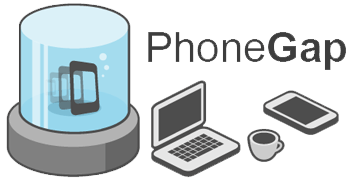

HISTORIA

Surgido de un iPhoneDevCamp organizado por Apple en 2008 de la mano de la empresa Nitobi Software. En 2011 Nitobi fue adquirida por el gigante Adobe. Después de esta adquisición el código de PhoneGap fue donado a la Fundación Apache pasando a llamarse Apache Cordova, pudiendo ser utilizado para construir otras herramientas. La última gran evolución de PhoneGap se produjo en 2012 con el nacimiento de PhoneGap Build, que permitía acabar con la engorrosa duplicidad de entornos de trabajo.
Nathaly Zatarain
¿QUE ES PHONEGAP

PhoneGap es un framework gratuito y open source que permite crear aplicaciones móviles multiplataforma a partir de tecnologías web como HTML5, CSS3 y Javascript. PhoneGap está realizado sobre Apache Cordova, fue creado por Nitobi, actualmente es propiedad de Adobe y crea de las llamadas aplicaciones híbridas, a mitad de camino entre las nativas y las puramente web, esto lo consigue a partir de una serie de APIs que permiten controlar características de los dispositivos como el acelerómetro, la cámara, las notificaciones o la geolocalización.
Nathaly Zatarain
CARACTERISTICAS

Phonegap permite crear actualmente aplicaciones móviles para: iPhone, Android, Windows Phone, Blackerry, Blackberry 10, webOS, Symbian y Bada.
Las APIs que proporciona PhoneGap son:
Acelerómetro
Cámara
Compás
Contactos
Sistema de Ficheros
Geolocalización
Media
Red
Notificaciones (alertas, sonido, vibración).
Almacenamiento
Las aplicaciones creadas con PhoneGap sólo pueden nutrirse de HTML, CSS y Javascript.
Si requieren lógica generada por otros lenguajes de programación, deberán conseguirla de un backend a través de APIs o webservices.
Ofrece un servicio en la nube llamado PhoneGap Build que permite construir rápidamente apps móviles y compilarlas con facilidad sin necesidad de SDKs, compiladores o hardware específico.
Tiene una licencia Apache 2.0
Nathaly Zatarain